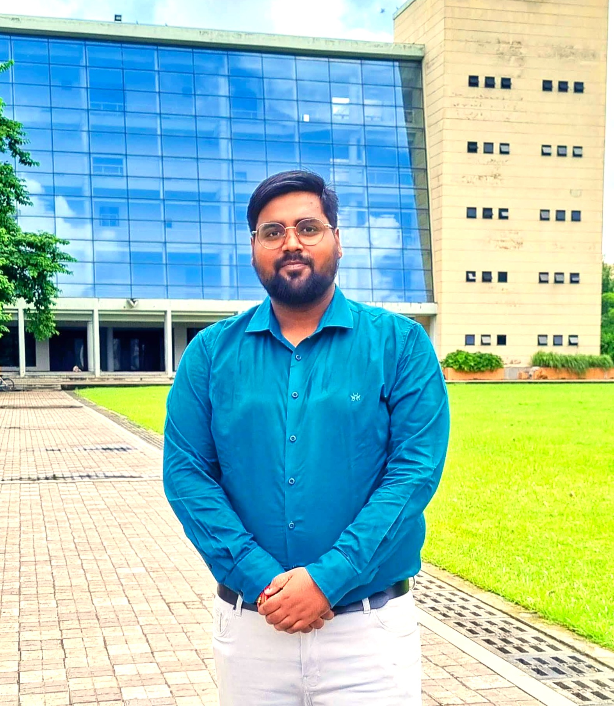

Ritesh Kumar
Ph.D. Candidate in Human Resource Management
Indian Institute of Management CalcuttaWelcome!
I am a Ph.D. Candidate in Human Resource Management at the Indian Institute of Management Calcutta. My research sits at the intersection of organisational behaviour and the sociology of work, examining how evolving structures, social networks, and institutional forces shape employee experiences and workplace outcomes.
My primary research interests include social capital in hybrid work environments, employee well-being and coping mechanisms under demanding conditions, strategic HRM roles and the HR Business Partner model, and occupational challenges in high-stress environments. I am also engaged in work examining labour exploitation and the changing nature of employment relationships in contemporary organisational contexts.